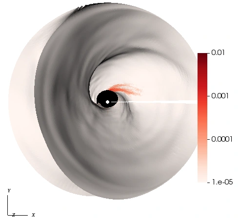
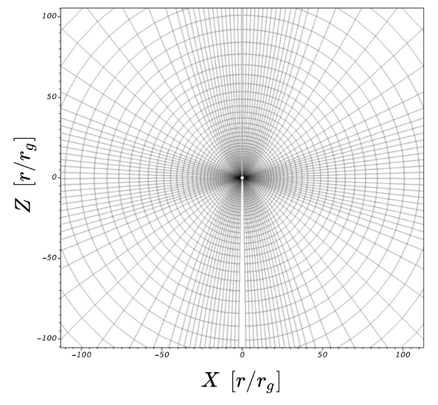
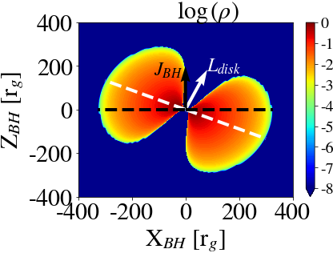
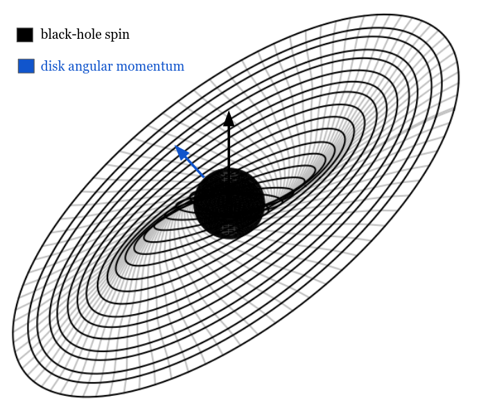
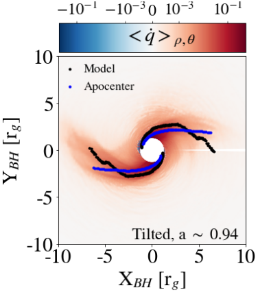
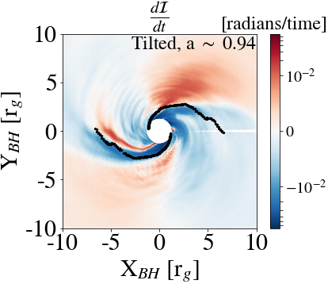

<div id="ajax-page" class="ajax-page-content">
  <div class="ajax-page-wrapper">
    <div class="ajax-page-nav">
      <div class="nav-item ajax-page-prev-next">
        <a class="ajax-page-load" href="#"><i class="lnr lnr-chevron-left"></i></a>
        <a class="ajax-page-load" href="#"><i class="lnr lnr-chevron-right"></i></a>
      </div>
      <div class="nav-item ajax-page-close-button">
        <a id="ajax-page-close-button" href="#"><i class="lnr lnr-cross"></i></a>
      </div>
    </div>

    <div class="ajax-page-title">
      <h1>Shock-induced Partial Alignment in Geometrically Thick Tilted Accretion Disks Around Black Holes</h1>
    </div>

    <div class="row">
      <div class="col-sm-12 col-md-12 portfolio-block">

        <p style="text-align: center; margin: 10px 0 18px; line-height: 1.9;">
          <b>Gupta & Dexter (2024)</b>, The Astrophysical Journal, 974:209
        </p>

        <!-- HERO FIGURE -->
      <div style="text-align: center; margin-bottom: 26px;">
        
      </div>


        <p style="text-align: center; margin: 18px 0 28px; line-height: 2.0;">
          This paper asks a focused question: in thick, tilted accretion flows, can standing shocks systematically reduce the disk’s inclination
          before the gas plunges into the black hole?
        </p>

        <hr style="border: none; border-top: 1px solid #eee; margin: 35px 0;">

        <h3 style="margin-bottom: 20px;">Introduction</h3>

        <p style="text-align: justify; line-height: 1.8; margin-bottom: 18px;">
          Hot accretion flows are central to black hole astrophysics because they are radiatively inefficient and operate far below the Eddington
          limit, making them relevant for the low/hard state of X-ray binaries and low-luminosity AGN, including Sgr A* and M87 <span class="cite-bracket">[</span><a class="cite" href="#ref-1">1</a><span class="cite-bracket">,</span><a class="cite" href="#ref-2">2</a><span class="cite-bracket">]</span>.
          These systems are often assumed to be aligned with the black hole spin, but for geometrically thick, low-accretion-rate flows,
          classic alignment routes (Bardeen–Petterson <a class="cite" href="#ref-3">[3]</a>, cumulative mass accretion <a class="cite" href="#ref-4">[4]</a>, 
          magneto-spin alignment <a class="cite" href="#ref-5">[5]</a> ) are not expected to be efficient.
        </p>

        <p style="text-align: justify; line-height: 1.8; margin-bottom: 18px;">
          At the same time, the physical origin and geometry of shocks in thick, tilted disks has remained unclear. Prior works argued that
          convergence of eccentric orbits near apocenter could trigger shocks, but their analysis was not able to explain the unique geometry of the shocks or does it
          depends on bending and twisting of the disk and a black hole spin <span class="cite-bracket">[</span><a class="cite" href="#ref-6">6</a><span class="cite-bracket">,</span><a class="cite" href="#ref-7">7</a><span class="cite-bracket">,</span><a class="cite" href="#ref-8">8</a><span class="cite-bracket">]</span>. 
          In light of these uncertainties, we attempt to explain the governing mechanism 
          behind shock structure and their potential role in disk alignment.
        </p>

        <hr style="border: none; border-top: 1px solid #eee; margin: 35px 0;">

        <h3 style="margin-bottom: 20px;">Computational setup</h3>

        <p style="text-align: justify; line-height: 1.8; margin-bottom: 18px;">
          We performed ideal, 3D, parallelized general-relativistic magnetohydrodynamic (GRMHD) simulations using the publicly available 
          <a href="https://github.com/atchekho/harmpi" target="_blank" style="text-decoration: none; color: #8b7355;">
         <b>HARMPI</b>
        </a> 
        code <a class="cite" href="#ref-9">[9]</a>, evolving a SANE disk around a Kerr black hole with spins: \(a=0.5\), \(0.75\), and \(0.9375\).
        </p>

        <p style="text-align: justify; line-height: 1.8; margin-bottom: 18px;">
          We initialize a Fishbone–Moncrief equilibrium torus <a class="cite" href="#ref-10">[10]</a> with inner radius and pressure maximum at
          \(r_{\rm in}=12\,r_g\) and \(r_{\rm max}=25\,r_g\), where \(r_g \equiv \frac{G M_{\rm BH}}{c^2}\) The torus is seeded with a single loop of poloidal magnetic field
          (\(\beta=100\), \(\Gamma=5/3\)) to trigger magneto-rotational instability (MRI). To study misalignment, we rotate the torus by \(24^\circ\)
          so that the initial disk angular momentum lies in the X–Z plane.
        </p>

        <!-- FIGURE 1 (side-by-side, aligned captions) -->
        <div style="display: flex; gap: 14px; justify-content: center; align-items: flex-start; flex-wrap: wrap; margin: 16px 0 8px;">

          <div style="flex: 0 1 48%; max-width: 420px; text-align: center;">
            <div style="height: 320px; display: flex; align-items: center; justify-content: center;">
              
            </div>
            <p style="margin: 8px 0 0; color: #666; font-size: 0.9em; line-height: 1.4;">
              Poloidal slice of our spherical-polar grid used in our simulations.
            </p>
          </div>

          <div style="flex: 0 1 48%; max-width: 420px; text-align: center;">
            <div style="height: 320px; display: flex; align-items: center; justify-content: center;">
              
            </div>
            <p style="margin: 8px 0 0; color: #666; font-size: 0.9em; line-height: 1.4;">
              Poloidal slice of the initial density profile overlayed with black-hole spin (black arrow) and disk angular momentum (white arrow).
            </p>
          </div>

        </div>

        <p style="text-align: justify; line-height: 1.8; margin-bottom: 18px;">
          We evolve the system in modified spherical-polar Kerr–Schild coordinates \((r,\theta,\phi)\) with resolution
          \(320\times256\times160\). The domain covers
          \((0.88\,r_H,\,10^5 \,r_g)\times(0,\pi)\times(0,2\pi)\), using a super-exponential radial coordinate to causally disconnect the event horizon \(r_H\) and outer radius.
        </p>

        <hr style="border: none; border-top: 1px solid #eee; margin: 35px 0;">

        <h3 style="margin-bottom: 20px;">Results</h3>

        <h4 style="margin: 0 0 10px; text-align: left;">3.1 Warped and twisted disk structure</h4>

        <p style="text-align: justify; line-height: 1.8; margin-bottom: 18px;">
          The tilted disks settle into a warped and twisted steady state. The outer disk warped beyond the initial \(24^\circ\) misalignment, while
          closer to the black hole the inclination decreases with radius, indicating partial inner alignment. The key geometric point is that
          the disk is not a rigid tilt: the angular-momentum direction varies with radius (warp) and with azimuth (twist) as shown below.
        </p>

        <!-- FIGURE 2 (side-by-side) -->
        <div style="display: flex; gap: 14px; justify-content: center; align-items: flex-start; flex-wrap: wrap; margin: 16px 0 8px;">

          <div style="flex: 0 1 48%; max-width: 420px; text-align: center;">
            <div style="height: 320px; display: flex; align-items: center; justify-content: center;">
              
            </div>
            <p style="margin: 8px 0 0; color: #666; font-size: 0.9em; line-height: 1.4;">
              Shell-averaged, density-weighted tilt\((r)\) and twist\((r)\).
            </p>
          </div>

          <div style="flex: 0 1 48%; max-width: 420px; text-align: center;">
            <div style="height: 320px; display: flex; align-items: center; justify-content: center;">
              
            </div>
            <p style="margin: 8px 0 0; color: #666; font-size: 0.9em; line-height: 1.4;">
              Visualization of the time-averaged warped disk geometry.
            </p>
          </div>

        </div>

        <h4 style="margin: 26px 0 10px; text-align: left;">3.2 Standing shocks and a toy model for their origin</h4>

        <p style="text-align: justify; line-height: 1.8; margin-bottom: 18px;">
          By analyzing the total heating rate \(\dot{q}\) we find that the standing shocks emerge near \(\sim6\,r_g\). To connect their location and geometry to the warped disk structure, we use a simple
          orbit-crowding toy model: we construct centered elliptical orbits (eccentricity \(e=0.1\)) in a disk-aligned frame, defined as a frame whose vertical axis is
          aligned with the steady-state disk angular momentum vector at each radius. We then map those fluid orbits into the black-hole frame so the warped, 
          twisted geometry appears. The resulting crowding loci reproduce key features of the shock geometry seen in the simulations. 
          
          <span style="white-space: nowrap;">In the left-panel video</span>, the orbit bundle is carried through this mapping step-by-step, and the regions where trajectories bunch up mark the expected crowding loci.
        The right panel shows the predicted loci overlaid on the simulated shock indicator.
        </p>

        <!-- FIGURE 3: Toy model (MP4 left) + overlay (image right) -->
        <div style="display: flex; gap: 14px; justify-content: center; align-items: flex-start; flex-wrap: wrap; margin: 16px 0 10px;">

          <!-- LEFT: MP4 -->
          <div style="flex: 1 1 420px; max-width: 460px; text-align: center;">
            <div style="height: 260px; display: flex; align-items: center; justify-content: center;">
              <video controls preload="metadata" playsinline
                    style="max-height: 260px; width: 100%; height: auto; border-radius: 8px; box-shadow: 0 4px 18px rgba(0,0,0,0.18);">
                <source src="img/portfolio/sane/orbits_caption.mp4" type="video/mp4">
                Your browser does not support the video tag.
              </video>
            </div>
            <p style="margin: 8px 0 0; color: #666; font-size: 0.9em; line-height: 1.4;">
              Toy model animation showing orbit crowding in the black-hole frame.
            </p>
          </div>

          <!-- RIGHT: IMAGE -->
          <div style="flex: 1 1 420px; max-width: 460px; text-align: center;">
            <div style="height: 260px; display: flex; align-items: center; justify-content: center;">
              
            </div>
            <p style="margin: 8px 0 0; color: #666; font-size: 0.9em; line-height: 1.4;">
              Toy-model predicted shock loci (black) overlaid on the simulated heating rate \((\dot{q})\) for high-spin case.
            </p>
          </div>

        </div>


        <h4 style="margin: 26px 0 10px; text-align: left;">3.3 Shock-induced partial alignment</h4>

        <p style="text-align: justify; line-height: 1.8; margin-bottom: 18px;">
          By analyzing the rate of change of disk tilt in the Lagnrangian frame, i.e. by tracking the motion of fluid parcels as they travel through spcae, we find that the regions of
          decrease tilt is associated with the location of the standing shocks, as shown below. This suggest that the standing shocks may be responsible for partially aligning the inner disk 
          with the black hole spin. Furthermore, we find that the alignment rate increases with black hole
          spin magnitude, but in all cases the gas accretes before full alignment can be achieved.
        </p>

        <!-- FIGURE 4 (single, smaller footprint) -->
        <div style="text-align: center; margin: 14px 0 8px;">
          
          <p style="margin: 8px auto 0; max-width: 760px; color: #666; font-size: 0.9em; line-height: 1.45; text-align: center;">
            Vertical snapshots of inclination rate change for \((a = 0.94)\). Alignment between shock locations (black) and decreasing tilt suggests shocks possibly drive inner disk alignment.
          </p>
        </div>

        <hr style="border: none; border-top: 1px solid #eee; margin: 35px 0;">

        <h3 style="margin-bottom: 20px;">Conclusions & discussion</h3>

        <p style="text-align: justify; line-height: 1.8; margin-bottom: 18px;">
          We carry out idealized 3D GRMHD simulations of prograde, weakly magnetized, geometrically thick accretion flows misaligned from the
          black hole spin axis. The disks develop a warped and twisted steady state  with the outer disk misaligning further away from the black hole equatorial plane.
          However, closer to the black hole, there is evidence of partial alignment, as the inclination angle decreases with radius. Standing shocks form near
          \(\sim6\,r_g\), and we show that these shocks could possibly contribute directly to partial alignment, with a stronger effect at higher spin. 
          Beyond demonstrating this shock-induced pathway, the orbit-crowding toy model provides an interpretable bridge between warped disk
          geometry and expected shock locations. The effect is real but limited: under these conditions, shocks do not align the flow fast
          enough to fully align the gas before inflow.
        </p>

        <p style="text-align: justify; line-height: 1.8; margin-bottom: 0;">
          However, Our toy model is intentionally minimal and should be read as a *locator* for where shocks are likely to form, not a full predictor of shock morphology. 
          In particular, it cannot predict the shock geometry from the initial misalignment alone; doing so would require tracking the complete fluid propertyvariations (e.g., density, pressure, and velocity) 
          across the shock front. These, standing shocks are natural sites for plasma acceleration and may seed nonthermal electron populations in collisionless systems (e.g., Sgr A*), and can also affect the accretion rate and hence X-ray observations, by 
          affecting the transport of angular momentum. 

        </p>
        
        <hr style="border: none; border-top: 1px solid #eee; margin: 35px 0;">

        <h3 style="margin-bottom: 20px;">References</h3>

        <div class="csl-bib-body">
          <div id = "ref-1" class="csl-entry">Abramowicz, M. A., &#38; Fragile, P. C. (2013). Foundations of Black Hole Accretion Disk Theory. 
            <i>Living Reviews in Relativity</i>, <i>16</i>(1), 1. 
            <a class="ref-link" href="https://doi.org/10.12942/lrr-2013-1" target="_blank" rel="noopener">
              https://doi.org/10.12942/lrr-2013-1
            </a>
          </div>


          <div id="ref-2" class="csl-entry">Event Horizon Telescope Collaboration(2019). First M87 Event Horizon Telescope Results. 
            I. The Shadow of the Supermassive Black Hole. <i>\apjl</i>, <i>875</i>(1), L1. 
            <a class="ref-link" href="https://doi.org/10.3847/2041-8213/ab0ec7" target="_blank" rel="noopener">
              https://doi.org/10.3847/2041-8213/ab0ec7
            </a>
          </div>

          <div id="ref-3" class="csl-entry">Bardeen, J. M., &#38; Petterson, J. A. (1975). The Lense-Thirring Effect and Accretion Disks around Kerr Black Holes. 
            <i>\apjl</i>, <i>195</i>, L65. 
            <a class="ref-link" href="https://doi.org/10.1086/181711" target="_blank" rel="noopener">
              https://doi.org/10.1086/181711
            </a>
          </div>
 
          <div id="ref-4" class="csl-entry">Volonteri, M. et. al (2005). The Distribution and Cosmic Evolution of Massive Black Hole Spins. 
            <i>The Astrophysical Journal</i>, <i>620</i>(1), 69. 
            <a class="ref-link" href="https://doi.org/10.1086/426858" target="_blank" rel="noopener">
              https://doi.org/10.1086/426858
            </a>
          </div>
          
          <div id="ref-5" class="csl-entry">McKinney, J. C. et. al (2013). Alignment of Magnetized Accretion Disks and Relativistic Jets with Spinning Black Holes. 
            <i>Science</i>, <i>339</i>(6115), 49–52. 
            <a class="ref-link" href="https://doi.org/10.1126/science.1230811" target="_blank" rel="noopener">
              https://doi.org/10.1126/science.1230811
            </a>
          </div>


          <div id="ref-6" class="csl-entry">Ivanov, P. B., &#38; Illarionov, A. F. (1997). The oscillatory shape of the stationary twisted disc around a Kerr black hole. 
            <i>\mnras</i>, <i>285</i>(2), 394–402. 
            <a class="ref-link" href="https://doi.org/10.1093/mnras/285.2.394" target="_blank" rel="noopener">
              https://doi.org/10.1093/mnras/285.2.394
            </a>
          </div>
          
          <div id="ref-7" class="csl-entry">Fragile, P. C., &#38; Blaes, O. M. (2008). Epicyclic Motions and Standing Shocks in Numerically Simulated Tilted Black Hole Accretion Disks. 
            <i>\apj</i>, <i>687</i>(2), 757–766. 
            <a class="ref-link" href="https://doi.org/10.1086/591936" target="_blank" rel="noopener">
              https://doi.org/10.1086/591936
            </a>
          </div>

          <div id="ref-8" class="csl-entry">White, C. J., Quataert, E., &#38; Blaes, O. (2019). Tilted Disks around Black Holes: A Numerical Parameter Survey for Spin and Inclination Angle. 
            <i>The Astrophysical Journal</i>, <i>878</i>(1), 51. 
            <a class="ref-link" href="https://doi.org/10.3847/1538-4357/ab089e" target="_blank" rel="noopener"> 
              https://doi.org/10.3847/1538-4357/ab089e
            </a>
          </div>


          <div id="ref-9" class="csl-entry">Gammie, C. F., McKinney, J. C., &#38; Toth, G. (2003). HARM: A Numerical Scheme for General Relativistic Magnetohydrodynamics. 
            <i>The Astrophysical Journal</i>, <i>589</i>(1), 444–457. 
            <a class="ref-link" href="https://doi.org/10.1086/374594" target="_blank" rel="noopener"> 
              https://doi.org/10.1086/374594
            </a>
          </div>


          <div id="ref-10" class="csl-entry">Fishbone, L. G., &#38; Moncrief, V. (1976). Relativistic fluid disks in orbit around Kerr black holes. 
            <i>\apj</i>, <i>207</i>, 962–976. 
            <a class="ref-link" href="https://doi.org/10.1086/154565" target="_blank" rel="noopener"> 
              https://doi.org/10.1086/154565
            </a>
          </div>

        </div>
        <hr style="border: none; border-top: 1px solid #eee; margin: 35px 0;">

        <h3 style="margin-bottom: 20px;">Project Details</h3>

        <p style="line-height: 1.8; margin-bottom: 12px;">
          <span style="color: #666;">Author:</span> Sajal Gupta
        </p>
        <p style="line-height: 1.8; margin-bottom: 12px;">
                    <span style="color: #666;">Year:</span> 2020-2024
        </p>
        <p style="line-height: 1.8; margin-bottom: 12px;">
          <span style="color: #666;">Contributors:</span> Jason Dexter
        </p>
        <p style="line-height: 1.8; margin-bottom: 12px;">
          <span style="color: #666;">Method:</span> 3D ideal GRMHD (HARMPI), tilted SANE disks, shock diagnostics via heating-rate proxy
        </p>
        <p style="line-height: 1.8; margin-bottom: 25px;">
          <span style="color: #666;">Keywords:</span> tilted accretion flows, GRMHD, standing shocks, warp/twist, partial alignment
        </p>

        <div style="margin-top: 30px;">
          <!-- Replace the link later with your NASA ADS link -->
          <a href="https://ui.adsabs.harvard.edu/abs/2024ApJ...974..209G/abstract" target="_blank"
             style="display: inline-block; padding: 12px 28px; background: #8b7355; color: white; text-decoration: none; border-radius: 4px; font-size: 0.95em;">
            <i class="fas fa-external-link-alt"></i> &nbsp;View on NASA ADS
          </a>
        </div>

      </div>
    </div>
  </div>
</div>
